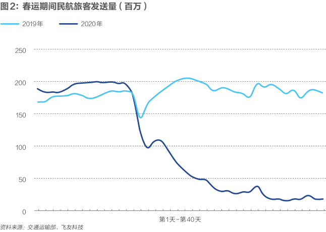

航空公司自救30天
原文链接 备份链接 作者：彭梁洁 来源：*商业人物*（ID：*biz-leaders）* 壹 赵倩最近一次执行飞行任务已经是一个月之前的事儿了。那是大年三十儿，返乡高峰的最后一天，赵倩执飞的737—800型客机搭载了150名乘客，上座率 …

***********陈亮 王静仪 | 文***********
*************************施智梁 | 编辑*************************

2020年2月21日， 沈阳桃仙国际机场，工作人员引导旅客上飞机。图/中新
曾经工作日凌晨5点多就有旅客大排长队的上海虹桥机场，在新型冠状病毒（下称“新冠病毒”）疫情肆虐下，显得异常冷清。
往返京沪之间的商务客也难觅踪迹。2月26日中午，虹桥机场B岛值机柜台处于关闭状态，开放的A岛柜台也是人烟稀少。在疫情期间坐过飞机的高鹏向《财经》记者感叹，浦东机场偌大的东航休息室内，仅有5人，简直可以随便躺。
上述现象在各大航司的经营数据上有更为直接的体现。
1月经营数据显示，中国国际航空股份有限公司（601111.SH/00753.HK/ADR OTC:AIRYY/LSE:AIRC，下称“国航”）、中国南方航空股份有限公司（600029.SH/01055.HK/NYSE:ZNH，下称“南航”）和中国东方航空股份有限公司（600115.SH/00670.HK/NYSE:CEA，下称“东航”）旅客周转量分别同比下降2.9％、2.42％、1.28％。
旅客周转量是运送旅客人数与运送距离的乘积，既反映运输的数量，又反映运输的距离，能全面地反映运输的成果。
客座率也不乐观。海南航空控股股份有限公司（600221.SH，下称“海航”）、上海吉祥航空股份有限公司（603885.SH，下称“吉祥航空”）和春秋航空股份有限公司（601021.SH，下称“春秋航空”）1月客座率同比各自下降了9.21％、6.84％和7.85％。
更可怕的是大量航班停飞导致现金流紧张。民航业一直是一个高投入、高风险的行业。不少航空公司已经选择发债与降低人力成本来控制现金流出。
然而这都是短期措施，春秋航空副总裁张武安对《财经》记者表示，要想获得大量现金流主要靠定期航班的恢复。
去哪儿网副总裁兰翔向《财经》记者指出，目前很多旅客对航班的搜索量没有降低。由此可以看出，很多旅客的出行需求还没有释放，这部分可能都是刚需出行旅客，比如需要返程工作或者出差的人群。至少有 800 万人次民航返程需求等待释放。
出行是刚需，航班终究会逐步复苏。飞友科技的数据显示，内地航空公司2月25日总体航班执行率较前一日增长3.78％。
但是缓慢的增长能让航空公司应对接下来的传统淡季吗？缺少春运收入的航空公司还能撑到暑运旺季吗？


缺钱的航空公司
偿债能力弱，现金少，融资能力弱的航司举步维艰
“免费退票政策实行以来，截至目前，国内外航空公司共办理免费退票2000万张，涉及票面总金额超过200亿元。”这是中国民航局副局长李健在2月15日的国务办新闻发布会上给出的数据。
一边要免费退票、支付员工工资，另一边又因缺少旅客要削减大量航班，航空公司的支出大增，收入却锐减，各大航空公司的日子都不好过。
中国民航业一直是高负债的行业。根据各家上市航空公司2019年三季度报告显示，国航、南航、东航、海航、春秋航空、吉祥航空负债率分别为64.8％、73.9％、74.5％、65％、49.4％、55.8％。
除机队规模在100架左右的两家民营航司外，规模较大的四家航空公司的负债率都处于高位状态。国航旗下的深圳航空最近三年负债率更是在85％左右的高位。
仅仅是高负债，对航空公司来说并不致命，没有偿债能力和现金流最为致命。
从2019年三季报来看，越大型的航空公司，偿债能力越不强。国航流动比率为0.3，速动比率为0.29；南航流动比率为0.13，速动比率为0.17；东航流动比率为0.26，速动比率为0.22；海航流动比率为0.44，速动比率为0.43；吉祥航空流动比率为0.71，速动比率为0.69；春秋航空流动比率为1.14，速动比率为1.13。
一般来说流动比率为2、速动比率为1，是公司偿债能力的理想模型。数值越低，偿债能力越差。
除国航和海航外，南航、东航、春秋航空、吉祥航空的应收账款周转天数均低于10天，这也就意味着航空公司得靠收现金维持。2020年中国新冠肺炎疫情暴发以来，中国航空公司没有享受到春运带来的红利，现金流入大幅减少。有的航空公司甚至停航，完全断绝现金流入。
2月18日，为期40天的2020年春运结束。40天内民航发送旅客3839万人次，同比下降47.5％。就在2019年12月，交通运输部曾预测2020年春运民航旅客运输量将达7900万人次。

张武安表示，整个春运期间春秋航空航班量减少约60％。春运客运量不及2019年的一半，相应带来营业收入和现金流也不及去年一半。
“现在中小航司的压力都还是挺大的，现在没有人敢说未来走向是什么。”一位地方小型航司的中层人士对《财经》记者说。
收入在减少，支出不会少。航空公司仍需要按时支付飞机、设备、办公场地的租金。飞机不飞还需要支付给机场停场费。员工薪资仍是一项重要支出。
对于部分航空公司来说，短期内还能应付上述支出。例如去年三季度末，国航和春秋航空还拥有76.0亿元和80.4亿元的现金余额。
普华永道航空业务服务首席顾问刘浩然告诉《财经》记者，对以往靠融资来应对日常开支的小航空公司来说，市场不景气，金融机构融资减少或者断贷，这些公司将会面临险境。
而且中国航空公司的收入来源较为单一，主要靠机票收入来回血。罗兰贝格管理咨询公司全球合伙人于占福对《财经》记者表示，有些航空公司进行了多元化业务拓展，但也是围绕航空业的拓展，例如进入航空配餐、航空物流领域。航空业的整体不景气，将使得航空公司没有风险分散点。
短期靠发债
发债、降低人力成本是航空公司缓解流动性危机的显性手段
在短期收入锐减的时候，谁拿到更多现金，谁将成为最后的存活者。开源与节流成为航空公司时下的重点。
发债成为多家航空公司的选择。《财经》记者统计，自2020年1月10日起，有六家航空公司及集团发行了超短期融资券。
东航及东航集团发行金额最多。自2020年1月16日起，东航和东航集团共发行超短期融资券8次，规模达到170亿元。南航和南航集团紧随其后，共发行了124亿元的超短期融资券，发行次数达到了8次。
国航旗下的深圳航空也在靠发债过日子。截至2019年6月底，深航总债务460亿元，资产负债率达到86.9％，最近三年深航的资产负债率一直维持在85％左右的高位。
1月10日，深航发行了2020年度第一次超短期融资券，实际发行总额4亿元，发行利率2％，创下了2017年以来AAA评级企业发债票面利率的最低纪录。
2月11日，深航发行首期5亿元、期限180天的超短期疫情防控债，利率为2％，为了补充疫情期间由于免费运输、免费退票而支出的运营资金。
2020年的头两个月内，深圳航空共发行了3期18亿元的超短期疫情防控债，此外还有3期12亿元的超短融。
深圳航空相关人士告诉《财经》记者，这是一个资金应急预案，主要是为防疫工作提供保障，目前看来这项工作还将持续。深圳航空取消了约50％的航班数量，截至1月30日，共免费提供113个航班运输防疫物资共计56吨，运输成本总计2000万元；截至2月5日，累计为旅客免费办理退票金额约5亿元。
此外，四川航空和厦门航空也分别发行了超短期融资券。春秋航空公告计划发行总额不超过50亿元的疫情债。
银行和地方政府也是现金血源。2月初，春秋航空只用了3天时间就拿到了工商银行提供的9亿元贷款。2月10日，春秋航空收到了来自上海市长宁区政府“先行兑付、材料后补”扶持资金，共计6374万元。《财经》记者了解到，从资金兑付立项，到最终确定方案，也只用了三天。
在金融手段外，短期维持现金流另一条直接见效的途径就是降低人力成本。民营航空公司大都会采用这种方法。
《财经》记者了解到，一家在中国南部边陲、有着巨额负债的大型航空公司自今年1月起，要求员工无薪轮休。该公司旗下子航空公司员工告诉《财经》记者，由于本公司经营情况还行，工资虽然推迟了三四天发放，但是没有像之前传言那样只发半薪。
春秋航空的多数干部表示，自愿在特殊时期不拿或少拿薪水，与公司共渡难关。此举无疑能帮公司减缓现金流出速度。
于占福表示，员工是公司重要资产，不能因为短期困难而大幅度裁员。一旦疫情过去，公司运行起来还是需要大量专业员工的。目前维持劳动关系，降低薪资支出是一个选项。
话虽如此，但是对于成本过高的员工，航空公司还是会挥泪斩马谡。
塔斯社报道称，海南航空计划解雇100多名俄罗斯飞行员，南航计划解雇大约10名。航空公司不仅会裁减俄罗斯飞行员，而且外国飞行员的编制总体上也在减少。
长期靠多飞
只有把定期航班恢复，才能长效回血
上述手段无论玩得多好，都是短期解决流动性的临时举措，对于航空公司来说，真正核心举措应该是恢复航班。
厦门航空的工作人员对《财经》记者表示，厦门航空目前应对疫情影响的一条举措就是“保变多飞”。所谓“保变多飞”是指在保证收回变动成本的基础上，让飞机利用率提高，多飞航班。
航空公司运营过程中有两大类成本，一是固定成本，二是变动成本。固定成本是指在相关范围内，与业务量变动无直接因果关系的成本。例如飞机发动机折旧费、飞机发动机大修费、员工工资福利补贴等。变动成本是指在相关范围内，与业务量的变动成一定比例关系的成本费用。例如航油消耗、航材消耗、机上配餐、起降费等等。
瑞银证券研究部总监连沛堃告诉《财经》记者，由于航空是高投入、低现金流的行业，固定成本很高，如果要让公司短期保持现金收入，只能做包机业务。
2月18日，南航、东航、春秋航空、吉祥航空、厦航、河北航空、北部湾航空、福州航空等各大航空公司推出了包机销售海报。一时间在朋友圈内刷屏，被戏称为空中版“省际包车”客源争夺战。
就在同日，春秋航空执飞湖州市首个复工包机。约180名云南籍工人登上春秋航空昆明至上海包机，落地后再由7辆大巴转运至湖州。
张武安透露，春秋航空的复工包机主要是从西部到东部，比如云南、贵州、四川、甘肃等这些劳动力输出大省，到东部浙江、江苏一带劳动力密集型产业集群的地方。春秋航空还增开了兰州、成都到东部的航班。
2月24日，东航一架载有160名世邦集团员工的飞机从郑州飞往上海。“第一次坐飞机回上海返工的感觉挺好。”世邦工业科技集团股份有限公司（下称“世邦集团”）员工吴文超告诉《财经》记者。
不仅员工感觉挺好，企业和航司也乐见其成。在全国企业逐步复工复产的大背景下，如何将分散在外地的员工安全接回工作地成为企业的一大难题。世邦集团常务副总经理方立波对《财经》记者说，世邦集团考虑了火车、大巴、飞机等多种方案，最终在预算可控的情况下，选择了飞机。因为飞机运输速度快，而且全流程安全可控。
包机成本上，方立波透露，比高铁贵了一倍，超出大巴运输50％－60％。整体运输成本符合预期，而且东航提供了优惠价格，这个价格低于市场价。
对航空公司来说，复工包机不仅是履行社会责任的好机会，同样也是减亏的好举措。
东航营销委副总经理沈劲军告诉《财经》记者，现阶段东航复工包机的最低人数标准很低，因此多数的复工包机都是低于运营成本执行的。东航首先考虑的不是经济账，而是央企的社会责任账。截至2月27日，东航共收到包机需求近100班。
在张武安看来，包机业务带不来太大量的现金流，现金流主要靠定期航班的恢复。
民航业正在逐步复苏。飞友科技的数据显示，2月25日全国累计取消航班8005架次，取消率62.91％，取消比例达近一周最低值；飞机利用率2.11小时/天，日利用率较前一日提高1.93％。
航空公司执行率也在提高。2月25日，四川航空、厦航、国航、南航航班执行率为68.2％、56.8％、46.5％、28.4％，较前一天分别提高了8％、0.9％、2.8％、2.1％。内地航空公司2月25日总体航班执行率较前一日增长3.78％。
像春秋航空、吉祥航空这样的民营航空公司更是打出价格牌，来吸引客源。在上海交通大学医学院读大五的陈力2月25日发现，当日上海飞成都的最低票价为80元，承运人为成都航空。
除此之外，吉祥航空、春秋航空也推出了不足150元的上海飞成都的机票。陈力告诉《财经》记者，通常非旺季时，上海-成都之间机票都要在800元以上，“没想到今年只要80元。”不过这只是上海飞成都单程机票的价格。作为复工返程的热门线路，成都飞上海的票价就没有那么便宜了，各航空公司给出的价格都在千元以上。
民航专家林智杰告诉《财经》记者，航班票价受到航空公司经营方针、航班客座率影响。但是无论票价怎么变动，正常情况下，只有航班收入能够覆盖变动成本，航空公司才会飞。
非典模型会再现吗
V型模式会不会再出现，要取决于整体经济发展，目前看很难
航班量逐步在恢复，但开年的日子依旧难过，中国民航业希望，能再度复制2003年非典疫情后的报复性反弹。
2003年第二季度，在非典疫情最为严重的时刻，中国民航业遭遇剧烈冲击。
当年4月，中国民航运送旅客573万人次，同比下降25.6％；5月，运送旅客163万人次，同比下降77.9％，主要疫区广州白云机场和北京首都机场吞吐量分别下降81.4％和86.5％。
6月末，世界卫生组织将北京从疫区名单中删除，非典疫情基本得到控制，当月旅客运输量达到315万人次，较5月翻番。随后下半年，旅客运输量更是急速上升，比上一年分别增长20.1％和14.3％。
尽管二季度运量下滑一半，但单靠下半年的强劲表现，2003年全年中国民航还是实现正向增长：完成旅客运输量8759万人，同比增长1.9％。
但在民航业规模翻了几倍的2020年，这样的逆风翻盘不再可期。
2003年，中国民航处于高速发展阶段，此前三年的旅客运输量增速分别为10.3％、11.9％、14.2％，如没有疫情影响，业内普遍预计2003年增速在12％以上。

经过多年高速发展，民航业2019年以来已进入中速发展阶段，加之受中美经贸摩擦、地缘政治等因素影响，2019年旅客运输量增速降为7.9％，如果保持正常经营，预计2020年增速只在7％左右。
十七年前的上升势头已不再，瑞银证券预计，假设疫情于今年7月之前结束，2020年全年需求同比下跌10％。
同时，新冠肺炎疫情比非典疫情对民航业的影响更大。2003年非典疫情顶峰出现在二季度，而二季度向来是民航淡季，此前民航已吃到春运红利，也享受了疫情过后的暑运高峰。
2020年的新冠肺炎疫情暴发更早，1月23日疫区武汉“封城”后，全国多个省份陆续启动一级响应，国内航班大幅缩减，国际航线也大面积停飞。航空公司不仅失去了春运高峰，疫情影响甚至可能延续到“五一”长假，希望只在7、8月份的暑运旺季。
刘浩然认为，此次新冠肺炎疫情造成的影响远超非典时期。非典时期，只是北京、广东、香港等局部地区有影响。受影响的航司区域性特征明显。而此次新冠肺炎疫情影响了全国乃至全球航空业。
国际航空运输协会（下称“国际航协”）对新冠肺炎疫情暴发对航空运输业影响的初步评估报告显示，亚太地区航空公司年客运需求或将下降13％。此前，国际航协曾预计亚太地区航空公司客运量将增长4.8％。但因疫情影响，该地区航司全年客运需求同比将下降8.2％。
以此估算，2020年，亚太地区航空公司或将损失278亿美元收入，其中大部分损失来自中国航空公司，中国国内客运市场的损失或将达128亿美元。
假设需求损失仅限于与中国相关的市场，亚太地区以外的航空公司收入损失将达15亿美元，全球航空公司总收入预估将损失293亿美元，客运需求下降4.7％。
上述预估结果的前提是基于新冠病毒与非典V型模型类似。非典疫情下航空业的特点是6个月内急剧下降，随后又迅速恢复。2003年，非典致亚太地区航空公司客运收入客公里下降5.1％。
国际航协理事长兼首席执行官亚历山大·德·朱尼亚克（Alexandre de Juniac）表示，对于全球航空运输业而言，这段时间充满挑战。当务之急是阻止病毒传播。新冠病毒将致客运总需求出现自2008年－2009年全球金融危机爆发以来的首次下降。“今年对于航空公司而言将十分艰难”。
去哪儿网副总裁兰翔在接受《财经》记者采访时表示，旅游业恢复信心起码要在疫情结束后1个月左右。虽然现在很多旅客取消出行，但很多旅客对航班的搜索量没有降低。由此可以看出，很多旅客的出行需求还没有释放，这部分可能都是刚需出行旅客，需要返程工作或者必须出差的人群。至少有 800 万人次民航返程需求等待释放。
今年中国航空业的冬天将变得漫长。但是，漫长的冬天之中仍有希望。
（陈力为化名，本刊记者王斌斌、实习生赵知乐对此文亦有贡献）
**作者为《财经》记者，文章原载2020年3月2日《财经》杂志，本作品著作权归《财经》独家所有，授权深圳市腾讯计算机系统有限公司独家享有信息网络传播权，任何第三方未经授权，不得转载。**


责编 | 蒋丽 lijiang@caijing.com.cn

原文链接 备份链接 作者：彭梁洁 来源：*商业人物*（ID：*biz-leaders）* 壹 赵倩最近一次执行飞行任务已经是一个月之前的事儿了。那是大年三十儿，返乡高峰的最后一天，赵倩执飞的737—800型客机搭载了150名乘客，上座率 …
原文链接 备份链接 记者 ：陈晓双 “ 2月15日至23日，客流量将再减半，日均旅客预计不超过20万人次 ” 从1月21日开始，民航局连续四次发布免费退票的政策。据统计，截至目前，中外航空公司共办理退票超过2000万张，票面金额超过200 …
原文链接 备份链接 *************▲*************疫情期间，人们不能移动，机票取消，使得国内航空公司不得不合并、取消多数航班。图为广州白云国际机场航站楼候机厅一角。（南方周末记者 冯飞/图） 全文共4406字，阅 …
原文链接 备份链接 我想说，疫情当前，不光是我们一线工作人员，而是所有人都在努力。 口述 | 孙明沁 整理 | 应 琛 1月28日晚，记得那是一个雨夜，我刚刚登临检疫完一架航班，回到上海浦东国际机场海关值机处的办公地，在门口正好遇上两位 …
原文链接 备份链接 图、文｜吕萌 编辑｜ 林鹏 随着延长假期的结束，疫情之下，“平安返程”成为每一位旅客心中的期盼。 在北京站，由大连始发的D31次动车缓缓驶进车站，每一位下车的旅客手中都拿着一份旅客信息登记表。表中填着每个乘车人的姓名、 …